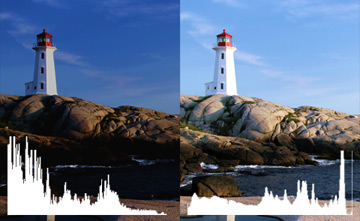

히스토그램(Histogram) 히스토그램(Histogram)– 고급 기능 : 히스토그램(Histogram)을 활용하면 사진의 노출을 세밀하게 조절할 수 있습니다.
①히스토그램 그래프(Histogram Graph)는 사진의 노출 분포를 나타냅니다. 그래프의 좌측이 어두운 부분의 비율,그래프의 우측이 밝은 부분의 비율을 나타냅니다. 그래프가 전체적으로 균일할 수록 노출이 적절한 사진이라고 할 수 있습니다.  ②자동 조절(Auto) 버튼을 누르면 그래프에 기반한 적정 노출을 자동으로 조절합니다. |